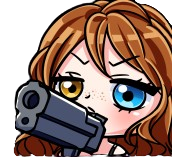
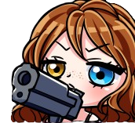

Deck Tribal Nova

Le deck Nova est un deck tribal qui focus les creatures sniper et Nova, l'objectif premier est donc d'avoir beaucoup de creature de type nova sur son boards (Oui on aime Nova)
Bienvenue dans l'univers d'Eternum TCG. La Team (à mettre) est heureuse de vous accueillir dans ce jeu indépendant ayant pour inspirations les personnes d'Eternum et le jeu de cartes Magic:The Gathering. Nous sommes heureux de vous avoir à nos côtés et vous compter parmi les membres de ces deux communautés.
Les mots d'ordre sont l'amusement, la communication et surtout le partage! Nous sommes tous là pour profiter ensemble un maximum alors n'hésitez pas à donner le meilleur de vous même, de discuter ou de donner votre avis ou idées!
Nous souhations également remercier Caribdis de nous avoir donné l'autorisation d'utiliser les personnages tirés de son jeu, sans cela on n'aurait jamais pu glorifier nos personnages préférés et les jouer dans un autre style de jeu!(Glorifiez la SAITE NOVA surtout, c'est un ordre.)
La Team (à mettre) tient à préciser que notre projet une parodie du jeu Magic:The Gathering et du Visual Novel Eternum dans un but non lucratif.
Le deck Nova est un deck tribal qui focus les creatures sniper et Nova, l'objectif premier est donc d'avoir beaucoup de creature de type nova sur son boards (Oui on aime Nova)
